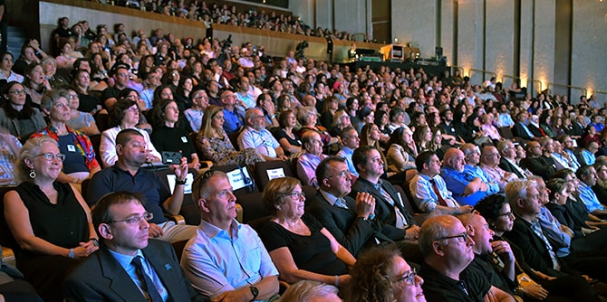

On November 8, 2019, the
President of the State of Israel, Mr. Reuven (Ruvi) Rivlin, and
Mrs. Barbara Mandel, attended a memorial ceremony for Morton Mandel, founder and chairman of the Mandel Foundation, who passed away at the end of October. Held at the Jerusalem Theatre, the ceremony brought together the leadership of the Foundation in Israel and the United States, current and past presidents of Israeli universities, mayors of Israeli cities, and graduates, fellows, and faculty members of the Foundation’s programs in Israel.
“With the passing of Morton Mandel, the State of Israel, the Jewish people, and all the citizens of Israel have lost a dear and loving friend, an outstanding Jew and Zionist,” said
President Rivlin. “Mort’s impact, the unique individual stamp of a man of vision, is deeply imprinted onto the State of Israel and Israeli society," the President continued. "It can be found in the very foundations of the important buildings he erected on our land, which serve as research centers and educational and cultural institutions throughout the country. My heart aches – and I say this also as a Jerusalemite – that Mort will not be here to dedicate the new building that is currently being built not far from here in Jerusalem, which will serve as the Israeli home of this important Foundation…. Mort, we will hold your memory in our hearts and will cherish the remarkable institutions that you built with your own two hands, which will continue to operate and to do good in the world even after you have gone.”
Professor Jehuda Reinharz, president and CEO of the Mandel Foundation, spoke about Morton Mandel’s love for Israel: “After the Six Day War, Mort developed very close relationships with many institutions and individuals in Israel. Over time, he also invested in several businesses in the country, and he especially loved Jerusalem. It is thus very significant that his last construction project, the Israeli headquarters of the Mandel Foundation, is located in Israel’s capital city. Building this beautiful building adjacent to the Jerusalem Botanical Gardens, near the Knesset, was Mort’s way of saying, ‘We are here to stay.’”
Ruvik Danilovich, mayor of Beer Sheva and a friend of Mr. Mandel’s, shared words of remembrance as well. “Mort was the kind of person who keeps our world moving forward. The kind of person who did not believe in the phrase ‘that’s impossible.’ To him, everything was possible," he said. "What a great loss to the State of Israel, what a great loss to mankind…. I am so happy to be able to say that I was privileged to have been a friend and a partner of Mort Mandel.”
Annette Hochstein, president emeritus of the Mandel Foundation–Israel, described her experiences over many years of working with Morton Mandel: “He expanded our horizons by bringing a particular worldview to all the institutions he founded… a worldview that is Jewish, liberal, and humanist. His commitment was entirely free of any personal interest; he did not seek recognition, but wanted to have a positive impact, in a humble way…. The modest circumstances in which he grew up were deeply etched into his character and molded his humanism, egalitarianism, and commitment to his fellow man.”
"Five weeks ago on this stage we celebrated the graduation of Mandel program participants from across the country – Israelis from all walks of life – Haredim, Secular, Bedouin, Arab, Druze – Israelis all dedicated to making a better society," said
Steve Hoffman, the incoming chairman of the Mandel Foundation. "Today we’ve come back to celebrate the life of the man who deeply touched our lives and welcomed us into his expanded Mandel family – a family that he built here for decades. He built with his resources, vision, values and inspiration." In conclusion, he pledged: “The Jack, Joseph and Morton Mandel Foundation in Israel and the United States will continue to carry on Mort’s values, his lessons, his love for the Jewish people and Israel.”
A highlight of the ceremony was a panel discussion of graduates of the Mandel School for Educational Leadership, who spoke about what they had learned from Mr. Mandel. Panelists in the discussion, which was moderated by
Dana Weiss, included
Mordechay Cohen, director general of the Ministry of the Interior (Cohort 8);
Mohana Fares, senior advisor to the Minister of Education (Cohort 10);
Karen Tal, founder and CEO of Educational Insights (Cohort 11);
David Ansbacher of Otzarot–Educational Tourism (Cohort 12);
Rana Fahoum, CEO of the Jerusalem International YMCA (Cohort 21); and
Tzipora Gutman, founder and director of Shira Village (Cohort 24). The assembled dignitaries and members of the Mandel community also enjoyed a performance by the children's choir of the music conservatory of Yeruham, a town in the Negev that held a special place in Mr. Mandel's heart and that is home of the Jack, Joseph and Morton Mandel Center for Innovation.
Morton Mandel was not just a successful businessman, but also a leader among men, a passionate Zionist, lover of Israel, visionary, and generous philanthropist, who donated more than half a billion dollars to various institutions in Israel. He founded the Mandel School for Educational Leadership, which has trained hundreds of educational leaders active in all areas of life in Israel; the Mandel Leadership Institute, which for almost three decades has been training civic leaders in the fields of education and society from all sectors of Israel’s population; and the Mandel Centers for Leadership in the Negev and in the North.

{kind=link}
{kind=link}
{kind=link}
{kind=link}
{kind=link}
{kind=link}
{kind=link}
{kind=link}
{kind=link}
{kind=link}
{kind=link}
{kind=link}
{kind=link}
{kind=link}
{kind=link}
{kind=link}
{kind=link}